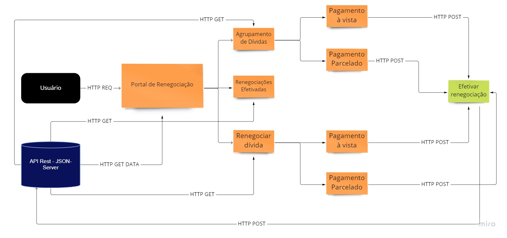

O objetivo do portal é possibilitar a visualização de renegociações efetivadas e renegociação de dívidas e através de ofertas de desconto para acordo. O usuário pode escolher entre duas ofertas: pagamento à vista ou de forma parcelada, para quitar o total dos débitos ou uma dívida individualmente.
O portal consiste em um sistema desenvolvido em Angular v14(framework Javascript) utilizando CSS(Sass) para os estilos, Bootstrap Icons para ícones e para simular o backend de uma API Rest utilizei o JSON Server.
Foi utilizado Jasmine e Karma para fazer testes unitários de renderização dos componentes
A comunicação entre os componentes e a API ocorre através de métodos HTTP. Para o backend foram usados dados de mock através do JSON Server, para simular as requisições.
O diagrama abaixo demonstra o funcionamento da comunicação.
